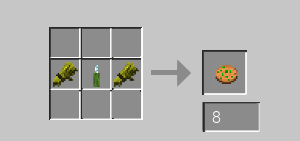
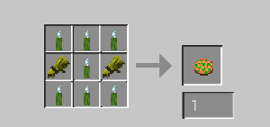

I'm not sorry. I'm really not...
This. This is the Pickle Cookie mod. Click here to download it.
The Pickle Cookies mod adds 2 new types of cookies to the game. You guessed it. Pickle Cookies.
This release works with with 1.18.2 and 1.19.2, and honestly I'm not sure if it can run on 1.18.X or 1.19.X
I recommend that you use Just Enough Items to get the recipes, but if you are *that* guy, here are the recipes.
 